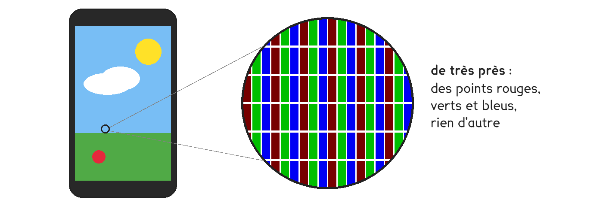
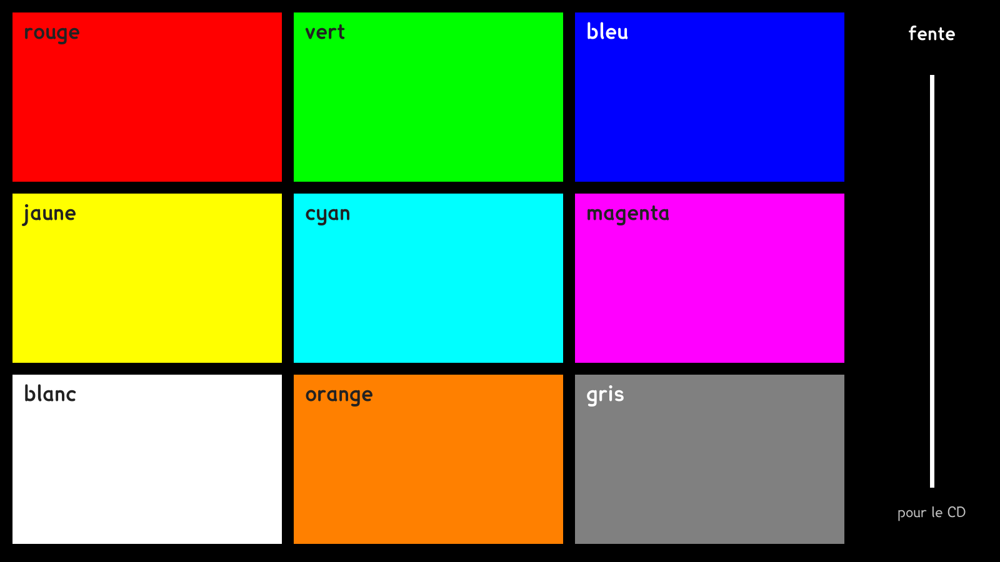
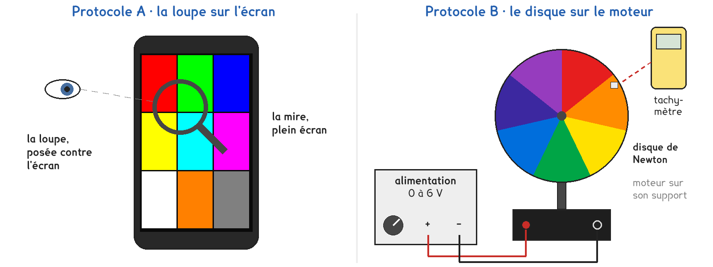

CAP et 2de Bac Pro · toutes spécialités · TP commun 2DE-11
Comment un écran fait-il du blanc et toutes les couleurs avec seulement des points rouges, verts et bleus ?
3 figures
Sujet. Un écran de téléphone n’allume que trois sortes de points lumineux, rouges, verts et bleus, si petits qu’on ne les voit pas à l’œil nu. Il affiche pourtant du blanc, du jaune, du gris et des millions d’autres couleurs.

Problématique : comment un écran fait-il du blanc et toutes les couleurs avec seulement des points rouges, verts et bleus ?
Au laboratoire, chaque poste affiche sur un téléphone, en plein écran, la mire ci-dessous, envoyée par le professeur ou ouverte sur la page web de ce TP.

a) Décomposer la lumière. Regarder à travers le spectroscope, ou dans la face brillante d’un CD inclinée près de l’œil, la lampe à filament, puis la fente blanche de la mire.
| La source | la lampe à filament | la fente de l’écran |
|---|---|---|
| Ce qu’on voit, entourer | toutes les couleurs à la suite · quelques bandes séparées | toutes les couleurs à la suite · quelques bandes séparées |
| Les couleurs qu’on voit | ……………………………………… | ……………………………………… |
Séparer les couleurs d’une lumière, c’est la décomposer. Les réunir, c’est la recomposer.
Deux protocoles mélangent les lumières : une partie de la classe prend A, l’autre prend B, et on compare à la fin.

Protocole A · la loupe sur l’écran. Dans chaque plage de couleur de la mire, on regarde à la loupe quels points sont allumés.
Protocole B · le disque sur le moteur. Un disque peint de plusieurs couleurs tourne de plus en plus vite. On cherche la vitesse où ses couleurs se fondent en une seule.
b) Comparer les deux protocoles, puis choisir le vôtre avant de toucher au matériel. Dans la deuxième ligne, entourer.
| Protocole A | Protocole B | |
|---|---|---|
| Ce qu’on regarde | …………………………… | …………………………… |
| Les lumières arrivent à l’œil | côte à côte · l’une après l’autre | côte à côte · l’une après l’autre |
| Ce qu’on mesure | …………………………… | …………………………… |
Je prends le protocole ……… parce que …………………………………………………………………… Le professeur peut vous imposer celui qui reste disponible.
c) Avant de mesurer, faire une hypothèse. En peinture, du rouge et du vert mélangés donnent du marron. Et en lumière ? Entourer.
| Les lumières mélangées | rouge + vert | rouge + vert + bleu |
|---|---|---|
| On obtient | marron · jaune · blanc · noir | marron · jaune · blanc · noir |
Avant de commencer
Ne jamais viser le soleil avec le spectroscope ou le CD. La lampe à filament brûle : on ne la touche pas.
Protocole B : disque bien serré, cheveux attachés, aucun doigt près du disque qui tourne. Jamais plus que la tension donnée par le professeur.
Un disque qui tourne lentement clignote : s’il vous gêne, détournez les yeux et prévenez le professeur.
Sans loupe, photographier la plage au zoom maximal avec un autre téléphone, puis agrandir.
d) Schématiser le montage de votre protocole. A : l’écran, la loupe et l’œil, de profil. B : le circuit électrique avec ses symboles, et le disque sur l’axe du moteur.
Le schéma se dessine sur la feuille du TP.
e) Remplir la ligne de votre protocole.
| Les lumières mélangées | rouge + vert + bleu | rouge + vert | vert + bleu | rouge + bleu |
|---|---|---|---|---|
| A · la plage où seuls ces points brillent | ……………… | ……………… | ……………… | ……………… |
| B · la couleur du disque lancé | ……………… | ……………… | ……………… | ……………… |
Les deux protocoles remplissent le même tableau : c’est lui qu’on compare à la question h.
f) Relever vos mesures. Protocole A : comment brillent les points ? Entourer.
| La plage | orange | grise |
|---|---|---|
| Les points rouges | éteints · faibles · forts | éteints · faibles · forts |
| Les points verts | éteints · faibles · forts | éteints · faibles · forts |
| Les points bleus | éteints · faibles · forts | éteints · faibles · forts |
Protocole B seulement. k est le nombre de fois où le rouge passe en un tour : 3 pour le disque rouge et vert, ……… pour le disque de Newton, à compter.
| Le disque | de Newton | rouge et vert |
|---|---|---|
| Tension où les couleurs se fondent, U (V) | ……………… | ……………… |
| Fréquence de rotation n (tr/min) | ……………… | ……………… |
| n (tr/s) = n (tr/min) ÷ 60 | ……………… | ……………… |
| Passages d’une couleur par seconde, n × k | ……………… | ……………… |
g) A : avec trois sortes de points, comment l’écran fait-il l’orange et le gris ?
B : le disque de Newton lancé est-il aussi blanc qu’une feuille de papier ? Pourquoi ?
h) Comparer votre tableau e avec celui d’un groupe de l’autre protocole : les mêmes mélanges donnent-ils les mêmes couleurs ? Où les lumières se mélangent-elles vraiment : dans l’écran, dans le disque ou dans l’œil ? Votre hypothèse c est-elle confirmée ?
i) Répondre à la problématique en deux phrases.
Ce que ce TP a établi, et qui vaut pour tout écran :
À RETENIR
La lumière blanche contient toutes les couleurs : un CD ou un spectroscope la décompose. Réunies, ces couleurs la recomposent.
Trois lumières, rouge, verte et bleue, suffisent pour créer toutes les couleurs : rouge et vert donnent du jaune, vert et bleu du cyan, rouge et bleu du magenta, les trois du blanc. C’est la synthèse additive.
L’œil réalise la synthèse additive : des points trop petits, ou des couleurs qui passent trop vite, se fondent en une seule couleur.
À la loupe, une photo de magazine ou un emballage imprimé montre aussi des points. Quelles couleurs ont-ils ? Les mêmes que ceux de l’écran ? ………………………………………………………………
TP commun de physique-chimie, toutes spécialités. Le travail se fait sur la feuille du TP : cette page en est la version à l'écran, sans les lignes à remplir. Rien n'est enregistré.